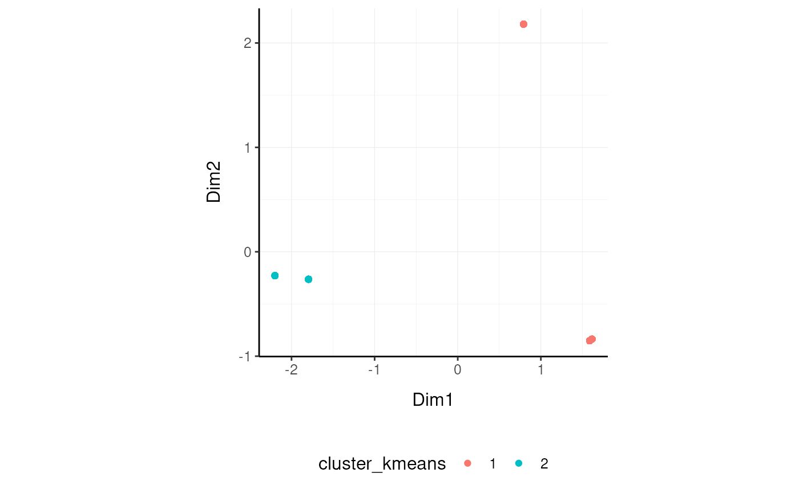

Overview of the tidybulk package
Stefano Mangiola
2020-11-12
introduction.RmdBrings transcriptomics to the tidyverse!

Functions/utilities available
| Function | Description |
|---|---|
identify_abundant |
identify the abundant genes |
aggregate_duplicates |
Aggregate abundance and annotation of duplicated transcripts in a robust way |
scale_abundance |
Scale (normalise) abundance for RNA sequencing depth |
reduce_dimensions |
Perform dimensionality reduction (PCA, MDS, tSNE) |
cluster_elements |
Labels elements with cluster identity (kmeans, SNN) |
remove_redundancy |
Filter out elements with highly correlated features |
adjust_abundance |
Remove known unwanted variation (Combat) |
test_differential_abundance |
Differential transcript abundance testing (DE) |
deconvolve_cellularity |
Estimated tissue composition (Cibersort or llsr) |
test_differential_cellularity |
Differential cell-type abundance testing |
keep_variable |
Filter for top variable features |
keep_abundant |
Filter out lowly abundant transcripts |
test_gene_enrichment |
Gene enrichment analyses (EGSEA) |
test_gene_overrepresentation |
Gene enrichment on list of transcript names (no rank) |
| Utilities | Description |
|---|---|
get_bibliography |
Get the bibliography of your workflow |
tidybulk |
add tidybulk attributes to a tibble object |
tidybulk_SAM_BAM |
Convert SAM BAM files into tidybulk tibble |
pivot_sample |
Select sample-wise columns/information |
pivot_transcript |
Select transcript-wise columns/information |
rotate_dimensions |
Rotate two dimensions of a degree |
ensembl_to_symbol |
Add gene symbol from ensembl IDs |
symbol_to_entrez |
Add entrez ID from gene symbol |
describe_transcript |
Add gene description from gene symbol |
impute_missing_abundance |
Impute abundance for missing data points using sample groupings |
fill_missing_abundance |
Fill abundance for missing data points using an arbitrary value |
Output data frame
| sample | transcript | abundance | annotation | new information |
|---|---|---|---|---|
chr or fctr
|
chr or fctr
|
integer |
… | … |
Create tidybulk tibble. It memorises key column names
tt = counts_mini %>% tidybulk(sample, transcript, count)All tidybulk methods are directly compatible with SummarizedExperiment as well.
Aggregate transcripts
tidybulk provide the aggregate_duplicates function to aggregate duplicated transcripts (e.g., isoforms, ensembl). For example, we often have to convert ensembl symbols to gene/transcript symbol, but in doing so we have to deal with duplicates. aggregate_duplicates takes a tibble and column names (as symbols; for sample, transcript and count) as arguments and returns a tibble with aggregate transcript with the same name. All the rest of the column are appended, and factors and boolean are appended as characters.
tt.aggr = tt %>% aggregate_duplicates( aggregation_function = sum )
tt.aggr## # A tibble: 2,635 x 7
## sample transcript `Cell type` count time condition `merged transcripts`
## <chr> <chr> <chr> <dbl> <chr> <chr> <dbl>
## 1 SRR1740034 TNFRSF4 b_cell 6 0 d TRUE 1
## 2 SRR1740034 PLCH2 b_cell 926 0 d TRUE 1
## 3 SRR1740034 PADI4 b_cell 21 0 d TRUE 1
## 4 SRR1740034 PAX7 b_cell 0 0 d TRUE 1
## 5 SRR1740034 CDA b_cell 1 0 d TRUE 1
## 6 SRR1740034 RCAN3 b_cell 905 0 d TRUE 1
## 7 SRR1740034 SMPDL3B b_cell 3 0 d TRUE 1
## 8 SRR1740034 EPB41 b_cell 4667 0 d TRUE 1
## 9 SRR1740034 LCK b_cell 436 0 d TRUE 1
## 10 SRR1740034 COL8A2 b_cell 1 0 d TRUE 1
## # … with 2,625 more rowsAll functions are also directly compatible with SummarizedExperiment.
se.aggr = se_mini %>% aggregate_duplicates( aggregation_function = sum )
se.aggr## class: SummarizedExperiment
## dim: 527 5
## metadata(0):
## assays(1): count
## rownames(527): ABCB4 ABCB9 ... ZNF324 ZNF442
## rowData names(0):
## colnames(5): SRR1740034 SRR1740035 SRR1740043 SRR1740058 SRR1740067
## colData names(4): Cell.type time condition merged.transcripts
Scale counts
We may want to compensate for sequencing depth, scaling the transcript abundance (e.g., with TMM algorithm, Robinson and Oshlack doi.org/10.1186/gb-2010-11-3-r25). scale_abundance takes a tibble, column names (as symbols; for sample, transcript and count) and a method as arguments and returns a tibble with additional columns with scaled data as <NAME OF COUNT COLUMN>_scaled.
tt.norm = tt.aggr %>% identify_abundant(factor_of_interest = condition) %>% scale_abundance(method="TMM")
tt.norm %>% select(`count`, count_scaled, .abundant, everything())## # A tibble: 2,635 x 11
## count count_scaled .abundant sample transcript `Cell type` time condition
## <dbl> <dbl> <lgl> <chr> <chr> <chr> <chr> <chr>
## 1 6 7.85 FALSE SRR17… TNFRSF4 b_cell 0 d TRUE
## 2 926 1211. TRUE SRR17… PLCH2 b_cell 0 d TRUE
## 3 21 27.5 TRUE SRR17… PADI4 b_cell 0 d TRUE
## 4 0 0 FALSE SRR17… PAX7 b_cell 0 d TRUE
## 5 1 1.31 TRUE SRR17… CDA b_cell 0 d TRUE
## 6 905 1184. TRUE SRR17… RCAN3 b_cell 0 d TRUE
## 7 3 3.92 FALSE SRR17… SMPDL3B b_cell 0 d TRUE
## 8 4667 6104. TRUE SRR17… EPB41 b_cell 0 d TRUE
## 9 436 570. TRUE SRR17… LCK b_cell 0 d TRUE
## 10 1 1.31 TRUE SRR17… COL8A2 b_cell 0 d TRUE
## # … with 2,625 more rows, and 3 more variables: `merged transcripts` <dbl>,
## # TMM <dbl>, multiplier <dbl>We can easily plot the scaled density to check the scaling outcome. On the x axis we have the log scaled counts, on the y axes we have the density, data is grouped by sample and coloured by cell type.
tt.norm %>%
ggplot(aes(count_scaled + 1, group=sample, color=`Cell type`)) +
geom_density() +
scale_x_log10() +
my_theme
All functions are also directly compatible with SummarizedExperiment.
se.norm = se.aggr %>% identify_abundant(factor_of_interest = condition) %>% scale_abundance(method="TMM")
se.norm## class: SummarizedExperiment
## dim: 527 5
## metadata(0):
## assays(2): count count_scaled
## rownames(527): ABCB4 ABCB9 ... ZNF324 ZNF442
## rowData names(1): .abundant
## colnames(5): SRR1740034 SRR1740035 SRR1740043 SRR1740058 SRR1740067
## colData names(6): Cell.type time ... TMM multiplier
Filter variable transcripts
We may want to identify and filter variable transcripts.
tt.norm.variable = tt.norm %>% keep_variable()
Reduce dimensions
We may want to reduce the dimensions of our data, for example using PCA or MDS algorithms. reduce_dimensions takes a tibble, column names (as symbols; for sample, transcript and count) and a method (e.g., MDS or PCA) as arguments and returns a tibble with additional columns for the reduced dimensions.
MDS (Robinson et al., 10.1093/bioinformatics/btp616)
tt.norm.MDS = tt.norm %>% reduce_dimensions(.abundance = count_scaled, method="MDS", .dims = 3)
tt.norm.MDS %>% select(sample, contains("Dim"), `Cell type`, time ) %>% distinct()## # A tibble: 5 x 6
## sample Dim1 Dim2 Dim3 `Cell type` time
## <chr> <dbl> <dbl> <dbl> <chr> <chr>
## 1 SRR1740034 -1.64 -0.844 0.0264 b_cell 0 d
## 2 SRR1740035 -1.61 -0.860 0.0438 b_cell 1 d
## 3 SRR1740043 2.23 -0.233 0.641 monocyte 1 d
## 4 SRR1740058 -0.798 2.20 0.00771 t_cell 0 d
## 5 SRR1740067 1.82 -0.268 -0.719 dendritic_myeloid 1 dOn the x and y axes axis we have the reduced dimensions 1 to 3, data is coloured by cell type.
tt.norm.MDS %>%
select(contains("Dim"), sample, `Cell type`) %>%
distinct() %>%
GGally::ggpairs(columns = 1:3, ggplot2::aes(colour=`Cell type`))All functions are also directly compatible with SummarizedExperiment.
se.norm.MDS = se.norm %>% reduce_dimensions(.abundance = count_scaled, method="MDS", .dims = 3)
se.norm.MDS## class: SummarizedExperiment
## dim: 527 5
## metadata(0):
## assays(2): count count_scaled
## rownames(527): ABCB4 ABCB9 ... ZNF324 ZNF442
## rowData names(1): .abundant
## colnames(5): SRR1740034 SRR1740035 SRR1740043 SRR1740058 SRR1740067
## colData names(9): Cell.type time ... Dim2 Dim3PCA
tt.norm.PCA = tt.norm %>% reduce_dimensions(.abundance = count_scaled, method="PCA" , .dims = 3)
tt.norm.PCA %>% select(sample, contains("PC"), `Cell type`, time ) %>% distinct()## # A tibble: 5 x 6
## sample PC1 PC2 PC3 `Cell type` time
## <chr> <dbl> <dbl> <dbl> <chr> <chr>
## 1 SRR1740034 -11.8 -8.57 -0.119 b_cell 0 d
## 2 SRR1740035 -11.8 -8.65 -0.550 b_cell 1 d
## 3 SRR1740043 17.9 -0.728 -7.94 monocyte 1 d
## 4 SRR1740058 -9.37 18.8 -0.191 t_cell 0 d
## 5 SRR1740067 15.1 -0.903 8.80 dendritic_myeloid 1 dOn the x and y axes axis we have the reduced dimensions 1 to 3, data is coloured by cell type.
tt.norm.PCA %>%
select(contains("PC"), sample, `Cell type`) %>%
distinct() %>%
GGally::ggpairs(columns = 1:3, ggplot2::aes(colour=`Cell type`))All functions are also directly compatible with SummarizedExperiment.
se.norm.PCA = se.norm %>% reduce_dimensions(.abundance = count_scaled, method="PCA" , .dims = 3)
se.norm.PCA## class: SummarizedExperiment
## dim: 527 5
## metadata(0):
## assays(2): count count_scaled
## rownames(527): ABCB4 ABCB9 ... ZNF324 ZNF442
## rowData names(1): .abundant
## colnames(5): SRR1740034 SRR1740035 SRR1740043 SRR1740058 SRR1740067
## colData names(9): Cell.type time ... PC2 PC3tSNE
tt.norm.tSNE =
tt_tcga_breast %>%
identify_abundant() %>%
reduce_dimensions(
.abundance = count_scaled,
method = "tSNE",
top = 500,
perplexity=10,
pca_scale =TRUE
)## Performing PCA
## Read the 251 x 50 data matrix successfully!
## OpenMP is working. 1 threads.
## Using no_dims = 2, perplexity = 10.000000, and theta = 0.500000
## Computing input similarities...
## Building tree...
## Done in 0.03 seconds (sparsity = 0.182886)!
## Learning embedding...
## Iteration 50: error is 68.181573 (50 iterations in 0.08 seconds)
## Iteration 100: error is 67.210313 (50 iterations in 0.07 seconds)
## Iteration 150: error is 67.480093 (50 iterations in 0.06 seconds)
## Iteration 200: error is 66.908283 (50 iterations in 0.05 seconds)
## Iteration 250: error is 67.635318 (50 iterations in 0.04 seconds)
## Iteration 300: error is 1.704831 (50 iterations in 0.04 seconds)
## Iteration 350: error is 1.287908 (50 iterations in 0.03 seconds)
## Iteration 400: error is 1.232478 (50 iterations in 0.03 seconds)
## Iteration 450: error is 1.186524 (50 iterations in 0.03 seconds)
## Iteration 500: error is 1.157423 (50 iterations in 0.03 seconds)
## Iteration 550: error is 1.149187 (50 iterations in 0.03 seconds)
## Iteration 600: error is 1.136276 (50 iterations in 0.03 seconds)
## Iteration 650: error is 1.129697 (50 iterations in 0.03 seconds)
## Iteration 700: error is 1.127595 (50 iterations in 0.03 seconds)
## Iteration 750: error is 1.124892 (50 iterations in 0.03 seconds)
## Iteration 800: error is 1.124425 (50 iterations in 0.03 seconds)
## Iteration 850: error is 1.123022 (50 iterations in 0.03 seconds)
## Iteration 900: error is 1.120205 (50 iterations in 0.03 seconds)
## Iteration 950: error is 1.114374 (50 iterations in 0.03 seconds)
## Iteration 1000: error is 1.103856 (50 iterations in 0.03 seconds)
## Fitting performed in 0.73 seconds.## # A tibble: 251 x 4
## tSNE1 tSNE2 sample Call
## <dbl> <dbl> <chr> <fct>
## 1 7.58 -7.58 TCGA-A1-A0SD-01A-11R-A115-07 LumA
## 2 0.649 11.3 TCGA-A1-A0SF-01A-11R-A144-07 LumA
## 3 8.76 -11.2 TCGA-A1-A0SG-01A-11R-A144-07 LumA
## 4 -1.16 -6.16 TCGA-A1-A0SH-01A-11R-A084-07 LumA
## 5 4.00 -6.70 TCGA-A1-A0SI-01A-11R-A144-07 LumB
## 6 -4.98 8.03 TCGA-A1-A0SJ-01A-11R-A084-07 LumA
## 7 -21.9 12.9 TCGA-A1-A0SK-01A-12R-A084-07 Basal
## 8 -7.75 -4.81 TCGA-A1-A0SM-01A-11R-A084-07 LumA
## 9 -6.63 -3.61 TCGA-A1-A0SN-01A-11R-A144-07 LumB
## 10 7.06 -19.4 TCGA-A1-A0SQ-01A-21R-A144-07 LumA
## # … with 241 more rows
tt.norm.tSNE %>%
pivot_sample() %>%
ggplot(aes(x = `tSNE1`, y = `tSNE2`, color=Call)) + geom_point() + my_theme
All functions are also directly compatible with SummarizedExperiment.
se.norm.tSNE =
se_breast_tcga_mini %>%
identify_abundant() %>%
reduce_dimensions(
.abundance = count_scaled,
method = "tSNE",
top = 500,
perplexity=10,
pca_scale =TRUE
)## Performing PCA
## Read the 251 x 50 data matrix successfully!
## OpenMP is working. 1 threads.
## Using no_dims = 2, perplexity = 10.000000, and theta = 0.500000
## Computing input similarities...
## Building tree...
## Done in 0.03 seconds (sparsity = 0.182886)!
## Learning embedding...
## Iteration 50: error is 65.816438 (50 iterations in 0.07 seconds)
## Iteration 100: error is 67.617557 (50 iterations in 0.08 seconds)
## Iteration 150: error is 68.938678 (50 iterations in 0.08 seconds)
## Iteration 200: error is 68.421832 (50 iterations in 0.05 seconds)
## Iteration 250: error is 69.802493 (50 iterations in 0.04 seconds)
## Iteration 300: error is 1.540837 (50 iterations in 0.04 seconds)
## Iteration 350: error is 1.229131 (50 iterations in 0.03 seconds)
## Iteration 400: error is 1.137159 (50 iterations in 0.02 seconds)
## Iteration 450: error is 1.109408 (50 iterations in 0.02 seconds)
## Iteration 500: error is 1.094707 (50 iterations in 0.02 seconds)
## Iteration 550: error is 1.084328 (50 iterations in 0.02 seconds)
## Iteration 600: error is 1.067537 (50 iterations in 0.02 seconds)
## Iteration 650: error is 1.050094 (50 iterations in 0.02 seconds)
## Iteration 700: error is 1.046562 (50 iterations in 0.02 seconds)
## Iteration 750: error is 1.037019 (50 iterations in 0.03 seconds)
## Iteration 800: error is 1.033086 (50 iterations in 0.03 seconds)
## Iteration 850: error is 1.031699 (50 iterations in 0.03 seconds)
## Iteration 900: error is 1.030961 (50 iterations in 0.03 seconds)
## Iteration 950: error is 1.028743 (50 iterations in 0.03 seconds)
## Iteration 1000: error is 1.026991 (50 iterations in 0.03 seconds)
## Fitting performed in 0.72 seconds.
se.norm.tSNE## class: SummarizedExperiment
## dim: 500 251
## metadata(0):
## assays(2): count count_scaled
## rownames(500): ENSG00000002834 ENSG00000003989 ... ENSG00000265972
## ENSG00000272398
## rowData names(1): .abundant
## colnames(251): TCGA-A1-A0SD-01A-11R-A115-07
## TCGA-A1-A0SF-01A-11R-A144-07 ... TCGA-GM-A2DM-01A-11R-A180-07
## TCGA-GM-A2DN-01A-11R-A180-07
## colData names(3): Call tSNE1 tSNE2
Rotate dimensions
We may want to rotate the reduced dimensions (or any two numeric columns really) of our data, of a set angle. rotate_dimensions takes a tibble, column names (as symbols; for sample, transcript and count) and an angle as arguments and returns a tibble with additional columns for the rotated dimensions. The rotated dimensions will be added to the original data set as <NAME OF DIMENSION> rotated <ANGLE> by default, or as specified in the input arguments.
tt.norm.MDS.rotated =
tt.norm.MDS %>%
rotate_dimensions(`Dim1`, `Dim2`, rotation_degrees = 45, .element = sample)Original On the x and y axes axis we have the first two reduced dimensions, data is coloured by cell type.
tt.norm.MDS.rotated %>%
pivot_sample() %>%
ggplot(aes(x=`Dim1`, y=`Dim2`, color=`Cell type` )) +
geom_point() +
my_theme
Rotated On the x and y axes axis we have the first two reduced dimensions rotated of 45 degrees, data is coloured by cell type.
tt.norm.MDS.rotated %>%
pivot_sample() %>%
ggplot(aes(x=`Dim1 rotated 45`, y=`Dim2 rotated 45`, color=`Cell type` )) +
geom_point() +
my_theme
All functions are also directly compatible with SummarizedExperiment.
se.norm.MDS %>%
rotate_dimensions(`Dim1`, `Dim2`, rotation_degrees = 45, .element = sample)## class: SummarizedExperiment
## dim: 527 5
## metadata(0):
## assays(2): count count_scaled
## rownames(527): ABCB4 ABCB9 ... ZNF324 ZNF442
## rowData names(1): .abundant
## colnames(5): SRR1740034 SRR1740035 SRR1740043 SRR1740058 SRR1740067
## colData names(11): Cell.type time ... Dim1.rotated.45 Dim2.rotated.45
Test differential abundance
We may want to test for differential transcription between sample-wise factors of interest (e.g., with edgeR). test_differential_abundance takes a tibble, column names (as symbols; for sample, transcript and count) and a formula representing the desired linear model as arguments and returns a tibble with additional columns for the statistics from the hypothesis test (e.g., log fold change, p-value and false discovery rate).
tt %>% identify_abundant(factor_of_interest = condition) %>% test_differential_abundance( ~ condition, action="only")## # A tibble: 393 x 6
## transcript logFC logCPM F PValue FDR
## <chr> <dbl> <dbl> <dbl> <dbl> <dbl>
## 1 CLEC7A -11.6 12.7 109. 0.000142 0.0170
## 2 HK3 -12.2 13.5 90.1 0.000225 0.0170
## 3 APOBEC3A -8.93 11.1 77.7 0.000319 0.0170
## 4 IGSF6 -7.78 10.5 71.8 0.000385 0.0170
## 5 RASSF4 -8.38 12.4 69.0 0.000422 0.0170
## 6 IL2RA 8.37 9.18 65.5 0.000477 0.0170
## 7 TLR8 -9.94 11.6 64.3 0.000497 0.0170
## 8 C5AR1 -9.97 12.2 56.7 0.000667 0.0170
## 9 FCN1 -12.6 15.4 56.6 0.000670 0.0170
## 10 CCR7 8.35 11.9 56.0 0.000687 0.0170
## # … with 383 more rowsAll functions are also directly compatible with SummarizedExperiment.
se_mini %>% test_differential_abundance( ~ condition)## class: SummarizedExperiment
## dim: 527 5
## metadata(0):
## assays(1): count
## rownames(527): ABCB4 ABCB9 ... ZNF324 ZNF442
## rowData names(5): logFC logCPM F PValue FDR
## colnames(5): SRR1740034 SRR1740035 SRR1740043 SRR1740058 SRR1740067
## colData names(3): Cell.type time condition
Adjust counts
We may want to adjust counts for (known) unwanted variation. adjust_abundance takes as arguments a tibble, column names (as symbols; for sample, transcript and count) and a formula representing the desired linear model where the first covariate is the factor of interest and the second covariate is the unwanted variation, and returns a tibble with additional columns for the adjusted counts as <COUNT COLUMN>_adjusted. At the moment just an unwanted covariated is allowed at a time.
tt.norm.adj =
tt.norm.batch %>%
adjust_abundance(
~ factor_of_interest + batch,
.abundance = count_scaled,
action = "only"
)
tt.norm.adj## # A tibble: 1,965 x 3
## transcript sample count_scaled_adjusted
## <chr> <chr> <int>
## 1 ABCB4 SRR1740034 1936
## 2 ABCB9 SRR1740034 80
## 3 ACAP1 SRR1740034 9676
## 4 ACP5 SRR1740034 2736
## 5 ADAM28 SRR1740034 8444
## 6 ADAMDEC1 SRR1740034 46
## 7 ADRB2 SRR1740034 464
## 8 AIF1 SRR1740034 4
## 9 AIM2 SRR1740034 2713
## 10 ALOX15 SRR1740034 47
## # … with 1,955 more rowsAll functions are also directly compatible with SummarizedExperiment.
se.norm.batch %>%
adjust_abundance(
~ factor_of_interest + batch,
.abundance = count_scaled
)## class: SummarizedExperiment
## dim: 8513 48
## metadata(0):
## assays(3): count count_scaled count_scaled_adjusted
## rownames(8513): A1BG A1BG-AS1 ... ZZEF1 ZZZ3
## rowData names(0):
## colnames(48): SRR1740034 SRR1740035 ... SRR1740088 SRR1740089
## colData names(7): Cell.type time ... TMM multiplier
Deconvolve Cell type composition
We may want to infer the cell type composition of our samples (with the algorithm Cibersort; Newman et al., 10.1038/nmeth.3337). deconvolve_cellularity takes as arguments a tibble, column names (as symbols; for sample, transcript and count) and returns a tibble with additional columns for the adjusted cell type proportions.
columns truncated
tt.cibersort =
tt %>%
deconvolve_cellularity(action="get", cores=1)
tt.cibersort %>% select(sample, contains("cibersort:")) ## # A tibble: 5 x 23
## sample `cibersort: B cells naive` `cibersort: B cells memory`
## <chr> <dbl> <dbl>
## 1 SRR17… 0.622 0.238
## 2 SRR17… 0.611 0.257
## 3 SRR17… 0 0
## 4 SRR17… 0.00232 0
## 5 SRR17… 0 0
## # … with 20 more variables: `cibersort: Plasma cells` <dbl>, `cibersort: T
## # cells CD8` <dbl>, `cibersort: T cells CD4 naive` <dbl>, `cibersort: T cells
## # CD4 memory resting` <dbl>, `cibersort: T cells CD4 memory activated` <dbl>,
## # `cibersort: T cells follicular helper` <dbl>, `cibersort: T cells
## # regulatory (Tregs)` <dbl>, `cibersort: T cells gamma delta` <dbl>,
## # `cibersort: NK cells resting` <dbl>, `cibersort: NK cells activated` <dbl>,
## # `cibersort: Monocytes` <dbl>, `cibersort: Macrophages M0` <dbl>,
## # `cibersort: Macrophages M1` <dbl>, `cibersort: Macrophages M2` <dbl>,
## # `cibersort: Dendritic cells resting` <dbl>, `cibersort: Dendritic cells
## # activated` <dbl>, `cibersort: Mast cells resting` <dbl>, `cibersort: Mast
## # cells activated` <dbl>, `cibersort: Eosinophils` <dbl>, `cibersort:
## # Neutrophils` <dbl>With the new annotated data frame, we can plot the distributions of cell types across samples, and compare them with the nominal cell type labels to check for the purity of isolation. On the x axis we have the cell types inferred by Cibersort, on the y axis we have the inferred proportions. The data is facetted and coloured by nominal cell types (annotation given by the researcher after FACS sorting).
tt.cibersort %>%
gather(`Cell type inferred`, `proportion`, 5:26) %>%
distinct(sample, `Cell type`, `Cell type inferred`, proportion) %>%
ggplot(aes(x=`Cell type inferred`, y=proportion, fill=`Cell type`)) +
geom_boxplot() +
facet_wrap(~`Cell type`) +
my_theme +
theme(axis.text.x = element_text(angle = 90, hjust = 1, vjust = 0.5), aspect.ratio=1/5)
All functions are also directly compatible with SummarizedExperiment.
se.cibersort %>% deconvolve_cellularity(cores=1)## class: SummarizedExperiment
## dim: 8513 48
## metadata(0):
## assays(1): count
## rownames(8513): A1BG A1BG-AS1 ... ZZEF1 ZZZ3
## rowData names(0):
## colnames(48): SRR1740034 SRR1740035 ... SRR1740088 SRR1740089
## colData names(27): Cell.type time ... cibersort..Eosinophils
## cibersort..Neutrophils
Cluster samples
We may want to cluster our data (e.g., using k-means sample-wise). cluster_elements takes as arguments a tibble, column names (as symbols; for sample, transcript and count) and returns a tibble with additional columns for the cluster annotation. At the moment only k-means clustering is supported, the plan is to introduce more clustering methods.
k-means
tt.norm.cluster = tt.norm %>%
cluster_elements(.abundance = count_scaled, method="kmeans", centers = 2 )
tt.norm.cluster## # A tibble: 2,635 x 12
## sample transcript `Cell type` count time condition `merged transcripts`
## <chr> <chr> <chr> <dbl> <chr> <chr> <dbl>
## 1 SRR17… TNFRSF4 b_cell 6 0 d TRUE 1
## 2 SRR17… PLCH2 b_cell 926 0 d TRUE 1
## 3 SRR17… PADI4 b_cell 21 0 d TRUE 1
## 4 SRR17… PAX7 b_cell 0 0 d TRUE 1
## 5 SRR17… CDA b_cell 1 0 d TRUE 1
## 6 SRR17… RCAN3 b_cell 905 0 d TRUE 1
## 7 SRR17… SMPDL3B b_cell 3 0 d TRUE 1
## 8 SRR17… EPB41 b_cell 4667 0 d TRUE 1
## 9 SRR17… LCK b_cell 436 0 d TRUE 1
## 10 SRR17… COL8A2 b_cell 1 0 d TRUE 1
## # … with 2,625 more rows, and 5 more variables: .abundant <lgl>, TMM <dbl>,
## # multiplier <dbl>, count_scaled <dbl>, `cluster kmeans` <fct>We can add cluster annotation to the MDS dimesion reduced data set and plot.
tt.norm.MDS %>%
cluster_elements(
.abundance = count_scaled,
method="kmeans",
centers = 2,
action="get"
) %>%
ggplot(aes(x=`Dim1`, y=`Dim2`, color=`cluster kmeans`)) +
geom_point() +
my_theme
All functions are also directly compatible with SummarizedExperiment.
se.norm %>%
cluster_elements(.abundance = count_scaled, method="kmeans", centers = 2 )## class: SummarizedExperiment
## dim: 527 5
## metadata(0):
## assays(2): count count_scaled
## rownames(527): ABCB4 ABCB9 ... ZNF324 ZNF442
## rowData names(1): .abundant
## colnames(5): SRR1740034 SRR1740035 SRR1740043 SRR1740058 SRR1740067
## colData names(7): Cell.type time ... multiplier cluster.kmeansSNN
tt.norm.SNN = tt.norm.tSNE %>% cluster_elements(.abundance= count_scaled, method = "SNN")## Modularity Optimizer version 1.3.0 by Ludo Waltman and Nees Jan van Eck
##
## Number of nodes: 251
## Number of edges: 8500
##
## Running Louvain algorithm...
## Maximum modularity in 10 random starts: 0.5277
## Number of communities: 4
## Elapsed time: 0 seconds
tt.norm.SNN %>%
pivot_sample()## # A tibble: 251 x 5
## sample Call tSNE1 tSNE2 `cluster SNN`
## <chr> <fct> <dbl> <dbl> <fct>
## 1 TCGA-A1-A0SD-01A-11R-A115-07 LumA 7.58 -7.58 1
## 2 TCGA-A1-A0SF-01A-11R-A144-07 LumA 0.649 11.3 2
## 3 TCGA-A1-A0SG-01A-11R-A144-07 LumA 8.76 -11.2 1
## 4 TCGA-A1-A0SH-01A-11R-A084-07 LumA -1.16 -6.16 0
## 5 TCGA-A1-A0SI-01A-11R-A144-07 LumB 4.00 -6.70 0
## 6 TCGA-A1-A0SJ-01A-11R-A084-07 LumA -4.98 8.03 1
## 7 TCGA-A1-A0SK-01A-12R-A084-07 Basal -21.9 12.9 3
## 8 TCGA-A1-A0SM-01A-11R-A084-07 LumA -7.75 -4.81 2
## 9 TCGA-A1-A0SN-01A-11R-A144-07 LumB -6.63 -3.61 2
## 10 TCGA-A1-A0SQ-01A-21R-A144-07 LumA 7.06 -19.4 1
## # … with 241 more rows
tt.norm.SNN %>%
select(contains("tSNE", ignore.case = FALSE), `cluster SNN`, sample, Call) %>%
gather(source, Call, c("cluster SNN", "Call")) %>%
distinct() %>%
ggplot(aes(x = `tSNE1`, y = `tSNE2`, color=Call)) + geom_point() + facet_grid(~source) + my_theme
# Do differential transcription between clusters
tt.norm.SNN %>%
mutate(factor_of_interest = `cluster SNN` == 3) %>%
test_differential_abundance(
~ factor_of_interest,
action="only"
)## # A tibble: 488 x 6
## ens logFC logCPM F PValue FDR
## <chr> <dbl> <dbl> <dbl> <dbl> <dbl>
## 1 ENSG00000111716 2.96 9.64 395. 1.22e-53 5.96e-51
## 2 ENSG00000065978 1.59 10.2 381. 2.11e-52 5.14e-50
## 3 ENSG00000186832 6.25 8.04 354. 4.93e-50 8.02e-48
## 4 ENSG00000140545 2.69 9.53 343. 5.61e-49 6.85e-47
## 5 ENSG00000181617 7.98 9.13 307. 1.39e-45 1.36e-43
## 6 ENSG00000137673 3.89 8.26 273. 4.00e-42 3.25e-40
## 7 ENSG00000143947 1.02 10.7 255. 3.95e-40 2.76e-38
## 8 ENSG00000124107 4.66 8.61 240. 1.55e-38 9.47e-37
## 9 ENSG00000092621 2.92 8.40 233. 9.35e-38 5.07e-36
## 10 ENSG00000083444 1.37 9.40 232. 1.25e-37 6.08e-36
## # … with 478 more rowsAll functions are also directly compatible with SummarizedExperiment.
se.norm.tSNE %>% cluster_elements(.abundance= count_scaled, method = "SNN")## Modularity Optimizer version 1.3.0 by Ludo Waltman and Nees Jan van Eck
##
## Number of nodes: 251
## Number of edges: 8500
##
## Running Louvain algorithm...
## Maximum modularity in 10 random starts: 0.5277
## Number of communities: 4
## Elapsed time: 0 seconds## class: SummarizedExperiment
## dim: 500 251
## metadata(0):
## assays(2): count count_scaled
## rownames(500): ENSG00000002834 ENSG00000003989 ... ENSG00000265972
## ENSG00000272398
## rowData names(1): .abundant
## colnames(251): TCGA-A1-A0SD-01A-11R-A115-07
## TCGA-A1-A0SF-01A-11R-A144-07 ... TCGA-GM-A2DM-01A-11R-A180-07
## TCGA-GM-A2DN-01A-11R-A180-07
## colData names(4): Call tSNE1 tSNE2 cluster.SNN
Drop redundant
We may want to remove redundant elements from the original data set (e.g., samples or transcripts), for example if we want to define cell-type specific signatures with low sample redundancy. remove_redundancy takes as arguments a tibble, column names (as symbols; for sample, transcript and count) and returns a tibble dropped recundant elements (e.g., samples). Two redundancy estimation approaches are supported:
- removal of highly correlated clusters of elements (keeping a representative) with method=“correlation”
- removal of most proximal element pairs in a reduced dimensional space.
Approach 1
tt.norm.non_redundant = tt.norm.MDS %>% remove_redundancy( method = "correlation" )We can visualise how the reduced redundancy with the reduced dimentions look like
tt.norm.non_redundant %>%
pivot_sample() %>%
ggplot(aes(x=`Dim1`, y=`Dim2`, color=`Cell type`)) +
geom_point() +
my_theme
All functions are also directly compatible with SummarizedExperiment.
se.norm.MDS %>% remove_redundancy( method = "correlation" )## class: SummarizedExperiment
## dim: 527 4
## metadata(0):
## assays(2): count count_scaled
## rownames(527): ABCB4 ABCB9 ... ZNF324 ZNF442
## rowData names(1): .abundant
## colnames(4): SRR1740035 SRR1740043 SRR1740058 SRR1740067
## colData names(9): Cell.type time ... Dim2 Dim3Approach 2
tt.norm.non_redundant =
tt.norm.MDS %>%
remove_redundancy(
method = "reduced_dimensions",
.element = sample,
.feature = transcript,
Dim_a_column = `Dim1`,
Dim_b_column = `Dim2`
)We can visualise MDS reduced dimensions of the samples with the closest pair removed.
tt.norm.non_redundant %>%
pivot_sample() %>%
ggplot(aes(x=`Dim1`, y=`Dim2`, color=`Cell type`)) +
geom_point() +
my_theme
All functions are also directly compatible with SummarizedExperiment.
se.norm.MDS %>%
remove_redundancy(
method = "reduced_dimensions",
.element = sample,
.feature = transcript,
Dim_a_column = `Dim1`,
Dim_b_column = `Dim2`
)## class: SummarizedExperiment
## dim: 527 3
## metadata(0):
## assays(2): count count_scaled
## rownames(527): ABCB4 ABCB9 ... ZNF324 ZNF442
## rowData names(1): .abundant
## colnames(3): SRR1740035 SRR1740058 SRR1740067
## colData names(9): Cell.type time ... Dim2 Dim3Other useful wrappers
The above wrapper streamline the most common processing of bulk RNA sequencing data. Other useful wrappers are listed above.
From BAM/SAM to tibble of gene counts
We can calculate gene counts (using FeatureCounts; Liao Y et al., 10.1093/nar/gkz114) from a list of BAM/SAM files and format them into a tidy structure (similar to counts).
counts = tidybulk_SAM_BAM(
file_names,
genome = "hg38",
isPairedEnd = TRUE,
requireBothEndsMapped = TRUE,
checkFragLength = FALSE,
useMetaFeatures = TRUE
)From ensembl IDs to gene symbol IDs
We can add gene symbols from ensembl identifiers. This is useful since different resources use ensembl IDs while others use gene symbol IDs.
counts_ensembl %>% ensembl_to_symbol(ens)## # A tibble: 119 x 8
## ens iso `read count` sample cases_0_project_disease_type
## <chr> <chr> <dbl> <chr> <chr>
## 1 ENSG… 13 144 TARGE… Acute Myeloid Leukemia
## 2 ENSG… 13 72 TARGE… Acute Myeloid Leukemia
## 3 ENSG… 13 0 TARGE… Acute Myeloid Leukemia
## 4 ENSG… 13 1099 TARGE… Acute Myeloid Leukemia
## 5 ENSG… 13 11 TARGE… Acute Myeloid Leukemia
## 6 ENSG… 13 2 TARGE… Acute Myeloid Leukemia
## 7 ENSG… 13 3 TARGE… Acute Myeloid Leukemia
## 8 ENSG… 13 2678 TARGE… Acute Myeloid Leukemia
## 9 ENSG… 13 751 TARGE… Acute Myeloid Leukemia
## 10 ENSG… 13 1 TARGE… Acute Myeloid Leukemia
## # … with 109 more rows, and 3 more variables:
## # cases_0_samples_0_sample_type <chr>, transcript <chr>, ref_genome <chr>ADD versus GET versus ONLY modes
Every function takes a tidytranscriptomics structured data as input, and (i) with action=“add” outputs the new information joint to the original input data frame (default), (ii) with action=“get” the new information with the sample or transcript relative informatin depending on what the analysis is about, or (iii) with action=“only” just the new information. For example, from this data set
tt.norm## # A tibble: 2,635 x 11
## sample transcript `Cell type` count time condition `merged transcripts`
## <chr> <chr> <chr> <dbl> <chr> <chr> <dbl>
## 1 SRR17… TNFRSF4 b_cell 6 0 d TRUE 1
## 2 SRR17… PLCH2 b_cell 926 0 d TRUE 1
## 3 SRR17… PADI4 b_cell 21 0 d TRUE 1
## 4 SRR17… PAX7 b_cell 0 0 d TRUE 1
## 5 SRR17… CDA b_cell 1 0 d TRUE 1
## 6 SRR17… RCAN3 b_cell 905 0 d TRUE 1
## 7 SRR17… SMPDL3B b_cell 3 0 d TRUE 1
## 8 SRR17… EPB41 b_cell 4667 0 d TRUE 1
## 9 SRR17… LCK b_cell 436 0 d TRUE 1
## 10 SRR17… COL8A2 b_cell 1 0 d TRUE 1
## # … with 2,625 more rows, and 4 more variables: .abundant <lgl>, TMM <dbl>,
## # multiplier <dbl>, count_scaled <dbl>action=“add” (Default) We can add the MDS dimensions to the original data set
tt.norm %>%
reduce_dimensions(
.abundance = count_scaled,
method="MDS" ,
.element = sample,
.feature = transcript,
.dims = 3,
action="add"
)## # A tibble: 2,635 x 14
## sample transcript `Cell type` count time condition `merged transcripts`
## <chr> <chr> <chr> <dbl> <chr> <chr> <dbl>
## 1 SRR17… TNFRSF4 b_cell 6 0 d TRUE 1
## 2 SRR17… PLCH2 b_cell 926 0 d TRUE 1
## 3 SRR17… PADI4 b_cell 21 0 d TRUE 1
## 4 SRR17… PAX7 b_cell 0 0 d TRUE 1
## 5 SRR17… CDA b_cell 1 0 d TRUE 1
## 6 SRR17… RCAN3 b_cell 905 0 d TRUE 1
## 7 SRR17… SMPDL3B b_cell 3 0 d TRUE 1
## 8 SRR17… EPB41 b_cell 4667 0 d TRUE 1
## 9 SRR17… LCK b_cell 436 0 d TRUE 1
## 10 SRR17… COL8A2 b_cell 1 0 d TRUE 1
## # … with 2,625 more rows, and 7 more variables: .abundant <lgl>, TMM <dbl>,
## # multiplier <dbl>, count_scaled <dbl>, Dim1 <dbl>, Dim2 <dbl>, Dim3 <dbl>action=“get” We can add the MDS dimensions to the original data set selecting just the sample-wise column
tt.norm %>%
reduce_dimensions(
.abundance = count_scaled,
method="MDS" ,
.element = sample,
.feature = transcript,
.dims = 3,
action="get"
)## # A tibble: 5 x 10
## sample `Cell type` time condition `merged transcripts` TMM multiplier
## <chr> <chr> <chr> <chr> <dbl> <dbl> <dbl>
## 1 SRR17… b_cell 0 d TRUE 1 0.858 1.31
## 2 SRR17… b_cell 1 d TRUE 1 0.838 1.19
## 3 SRR17… monocyte 1 d FALSE 1 0.814 1.90
## 4 SRR17… t_cell 0 d TRUE 1 1.28 0.968
## 5 SRR17… dendritic_… 1 d FALSE 1 1.33 1.48
## # … with 3 more variables: Dim1 <dbl>, Dim2 <dbl>, Dim3 <dbl>action=“only” We can get just the MDS dimensions relative to each sample
tt.norm %>%
reduce_dimensions(
.abundance = count_scaled,
method="MDS" ,
.element = sample,
.feature = transcript,
.dims = 3,
action="only"
)## # A tibble: 5 x 4
## sample Dim1 Dim2 Dim3
## <chr> <dbl> <dbl> <dbl>
## 1 SRR1740034 -1.64 -0.844 0.0264
## 2 SRR1740035 -1.61 -0.860 0.0438
## 3 SRR1740043 2.23 -0.233 0.641
## 4 SRR1740058 -0.798 2.20 0.00771
## 5 SRR1740067 1.82 -0.268 -0.719Appendix
## R Under development (unstable) (2020-11-05 r79401)
## Platform: x86_64-pc-linux-gnu (64-bit)
## Running under: Ubuntu 20.04.1 LTS
##
## Matrix products: default
## BLAS/LAPACK: /usr/lib/x86_64-linux-gnu/openblas-pthread/libopenblasp-r0.3.8.so
##
## locale:
## [1] LC_CTYPE=en_US.UTF-8 LC_NUMERIC=C
## [3] LC_TIME=en_US.UTF-8 LC_COLLATE=en_US.UTF-8
## [5] LC_MONETARY=en_US.UTF-8 LC_MESSAGES=C
## [7] LC_PAPER=en_US.UTF-8 LC_NAME=C
## [9] LC_ADDRESS=C LC_TELEPHONE=C
## [11] LC_MEASUREMENT=en_US.UTF-8 LC_IDENTIFICATION=C
##
## attached base packages:
## [1] stats graphics grDevices utils datasets methods base
##
## other attached packages:
## [1] tidybulk_1.2.0 purrr_0.3.4 rlang_0.4.8 ggplot2_3.3.2
## [5] tidyr_1.1.2 magrittr_1.5 dplyr_1.0.2 tibble_3.0.4
## [9] knitr_1.30 BiocStyle_2.19.0
##
## loaded via a namespace (and not attached):
## [1] backports_1.2.0 tidytext_0.2.6
## [3] systemfonts_0.3.2 plyr_1.8.6
## [5] igraph_1.2.6 lazyeval_0.2.2
## [7] splines_4.1.0 BiocParallel_1.25.1
## [9] listenv_0.8.0 SnowballC_0.7.0
## [11] GenomeInfoDb_1.27.0 sva_3.39.0
## [13] digest_0.6.27 htmltools_0.5.0
## [15] fansi_0.4.1 memoise_1.1.0
## [17] tensor_1.5 cluster_2.1.0
## [19] ROCR_1.0-11 limma_3.47.0
## [21] globals_0.13.1 readr_1.4.0
## [23] annotate_1.69.0 matrixStats_0.57.0
## [25] pkgdown_1.6.1.9000 colorspace_2.0-0
## [27] blob_1.2.1 ggrepel_0.8.2
## [29] textshaping_0.1.2 xfun_0.19
## [31] crayon_1.3.4 RCurl_1.98-1.2
## [33] jsonlite_1.7.1 spatstat.data_1.4-3
## [35] spatstat_1.64-1 genefilter_1.73.0
## [37] survival_3.2-7 zoo_1.8-8
## [39] glue_1.4.2 polyclip_1.10-0
## [41] gtable_0.3.0 zlibbioc_1.37.0
## [43] XVector_0.31.0 leiden_0.3.5
## [45] DelayedArray_0.17.0 future.apply_1.6.0
## [47] BiocGenerics_0.37.0 abind_1.4-5
## [49] scales_1.1.1 DBI_1.1.0
## [51] edgeR_3.33.0 miniUI_0.1.1.1
## [53] Rcpp_1.0.5 widyr_0.1.3
## [55] viridisLite_0.3.0 xtable_1.8-4
## [57] reticulate_1.18 rsvd_1.0.3
## [59] bit_4.0.4 preprocessCore_1.53.0
## [61] stats4_4.1.0 htmlwidgets_1.5.2
## [63] httr_1.4.2 RColorBrewer_1.1-2
## [65] ellipsis_0.3.1 Seurat_3.2.2
## [67] ica_1.0-2 pkgconfig_2.0.3
## [69] XML_3.99-0.5 farver_2.0.3
## [71] uwot_0.1.8 deldir_0.2-3
## [73] locfit_1.5-9.4 utf8_1.1.4
## [75] reshape2_1.4.4 tidyselect_1.1.0
## [77] labeling_0.4.2 later_1.1.0.1
## [79] AnnotationDbi_1.53.0 munsell_0.5.0
## [81] tools_4.1.0 cli_2.1.0
## [83] generics_0.1.0 RSQLite_2.2.1
## [85] broom_0.7.2 ggridges_0.5.2
## [87] evaluate_0.14 stringr_1.4.0
## [89] fastmap_1.0.1 goftest_1.2-2
## [91] yaml_2.2.1 ragg_0.4.0
## [93] bit64_4.0.5 fs_1.5.0
## [95] fitdistrplus_1.1-1 RANN_2.6.1
## [97] pbapply_1.4-3 future_1.20.1
## [99] nlme_3.1-150 mime_0.9
## [101] tokenizers_0.2.1 compiler_4.1.0
## [103] png_0.1-7 plotly_4.9.2.1
## [105] e1071_1.7-4 spatstat.utils_1.17-0
## [107] stringi_1.5.3 desc_1.2.0
## [109] lattice_0.20-41 Matrix_1.2-18
## [111] vctrs_0.3.4 pillar_1.4.6
## [113] lifecycle_0.2.0 BiocManager_1.30.10
## [115] lmtest_0.9-38 RcppAnnoy_0.0.16
## [117] data.table_1.13.2 cowplot_1.1.0
## [119] bitops_1.0-6 irlba_2.3.3
## [121] httpuv_1.5.4 patchwork_1.1.0
## [123] GenomicRanges_1.43.0 R6_2.5.0
## [125] bookdown_0.21 promises_1.1.1
## [127] gridExtra_2.3 KernSmooth_2.23-18
## [129] janeaustenr_0.1.5 IRanges_2.25.2
## [131] parallelly_1.21.0 codetools_0.2-18
## [133] MASS_7.3-53 assertthat_0.2.1
## [135] SummarizedExperiment_1.21.0 rprojroot_1.3-2
## [137] withr_2.3.0 sctransform_0.3.1
## [139] S4Vectors_0.29.3 GenomeInfoDbData_1.2.4
## [141] mgcv_1.8-33 parallel_4.1.0
## [143] hms_0.5.3 rpart_4.1-15
## [145] grid_4.1.0 class_7.3-17
## [147] rmarkdown_2.5 MatrixGenerics_1.3.0
## [149] Rtsne_0.15 Biobase_2.51.0
## [151] shiny_1.5.0